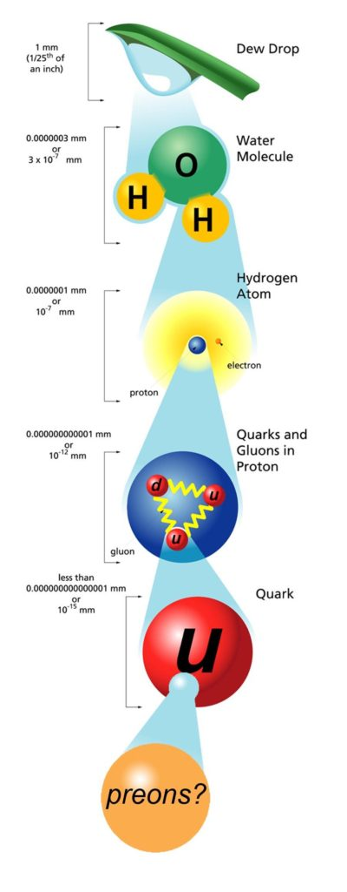
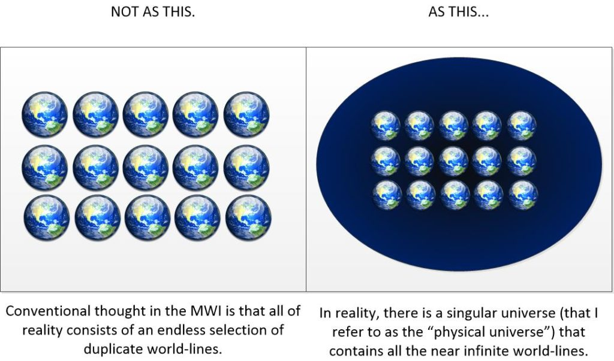
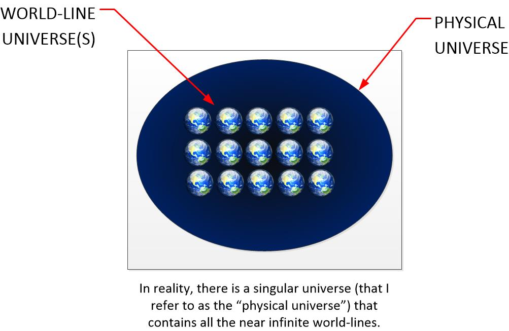
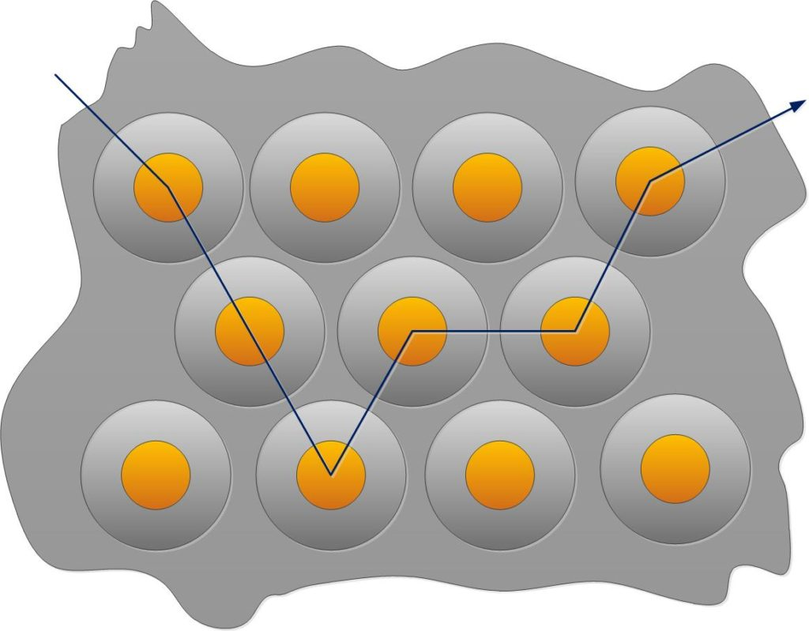
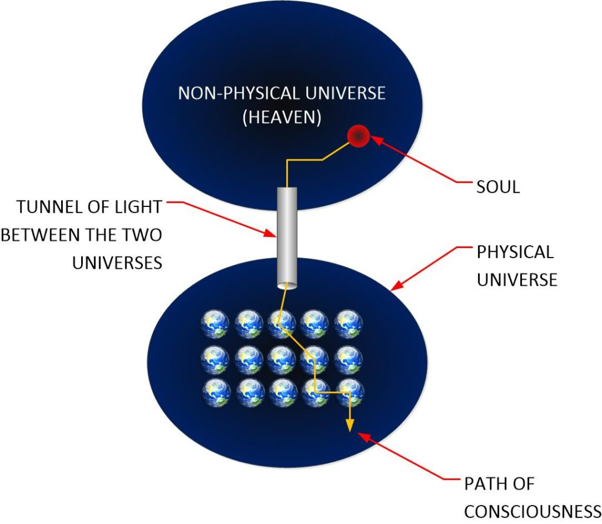
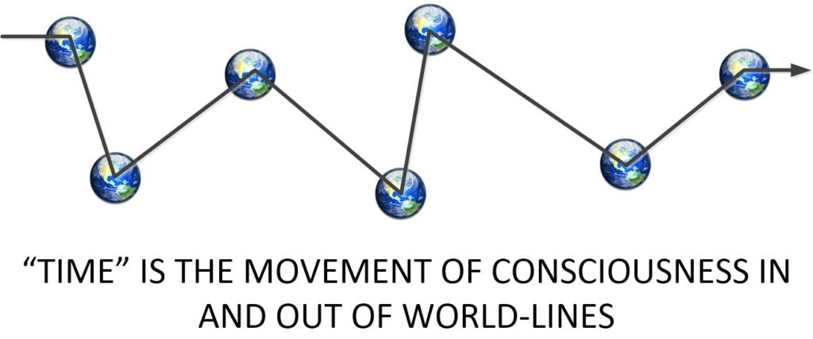

This is going to be a kind of odd-ball post, and I have been putting it off for a long time. But it needs to be presented, no matter how confusing or perplexing. This is a post that talks about our physical universe, as opposed to what is conventionally believed to be our universe. I discuss our physical and non-physical universes and what the delineation is. I also discuss how it differs from what everyone thinks it is. This is what many people in MAJestic understand the universe to actually be like. In some ways it is simple and in some ways it is really strange as it does not agree with our physical Newtonian observation.
Introduction
I should have tackled this subject first, right off.
But, it’s a real hassle.
You know, the ignorance in America and the world is so absolutely profound that it would be an up-hill battle. It’s like that character trying to explain to the “scientists” in the White House (in the movie “Idiocracy”) that you cannot give energy drinks to plants.
And this ignorance is so profound and prevalent that it just isn’t worth my time and effort. For me, and many in MAJestic, we just shrug our shoulders and say “fuck it”, and then grab another beer. Arguing with fools is a zero-sum game.
What we think the universe is
To understand your role in this universe, you need to understand just what “this” universe actually is. For it is absolutely not what everyone else thinks or says it is. And I must say if you are trying to find understanding by using the internet, you are going to be disappointed.
This is from NASA…
What is the Universe? 07.15.04 The Universe is a big, open place. You are in the Universe. Things you can't see are in it, too. The biggest stars are in it. Even the smallest things on Earth are part of the Universe. We don't even know how big the Universe is! -NASA.gov
This is from NASA.
Obviously written by a “diversity hire“.
That’s what the most learned scientists have to say about the universe. Aren’t you glad that you asked? Isn’t it great to know that it is a big, vast, empty space that tiny insignificant you exists within?
But it’s so absolutely wrong, it boggles the mind.
What the actual universe is
Our “universe” is not what it appears. It is not this big enormous area of empty space with scattered stars, galaxies and planets in it. It is not empty. It is actually quite solid…
… yeah. I get it.
“How can it be solid, when all I see is empty space, duh?”
We cannot see the universe as it is simply because our physical bodies cannot see things as they are. We only have a mere five senses that are all quite limited, and only permit us to see the most narrow bands of what our earthly environment is.
We cannot see raw infrared radiation.
We cannot see X-rays emitted from a star.
We cannot see “dark matter”.
We cannot see a neutron shower.
We cannot see all the quanta, the photons, the electrons and all the atomic particles zooming about all over the place. We cannot see the things burst forth into our universe and then leave it. We cannot see the thoughts that all creatures create, and how they move about and influence the actions within our universe. We cannot see or sense the “unseen”.
This is unfortunate, but this is the way that it is.
If we could see quanta, everything would look like shades of grey. With floating and moving "clouds" of grey that move in and out of a overlapping grey "fog".
To us, it appears that the universe is just ’empty space’. But, it’s not. It really isn’t.
Instead, our universe is all quite solid.
It is like this enormous cauldron of thick soup. And within that mixture are pockets of thicker soup, and areas of watery soup. There are areas of spicy soup, and areas of sweet soup. There are areas of hot soup, and areas of cold soup. There are all kinds of things in this soup.
Do you see any empty space in the picture of soup below?
And that is what our actual universe is like.
You know, it’s not all that unlike the code in the movie “The Matrix”. Where the entire “universe” that humans experience is just computer code. And if you look at the code itself it doesn’t resemble anything at all what you see, hear, and sense when you are within the matrix.
Now the thing about this is that our universe is not lines and reams of computer code. It’s NOT a software simulation. It’s a region that is filled to the brim with all sorts of super tiny stuff…
It is just a soup of quanta moving about in all sorts of ways, means and actions. We as humans cannot sense this quanta. But we can sense the things that the quanta alters.
We, as human beings, observe the world around us with our senses. And what our senses “pick up” are the effects of the mass movement and behaviors of the quanta in this universe. They do not pick up the quanta themselves.
Imagine that you are on a boat in a sea. You can see the blue sky above and the deep dark green-blue sea below. It’s calm, but pretty soon the sea starts to get choppy and waves form, with many waves forming “white caps”. You, on the boat, cannot see why the waves are choppy, you just know that they are.
That is how this universe works.
We cannot see things as they truly are with our senses. But we can sense the end result of the movement of quanta.
The “filler” in our universe
All that quanta moving back and forth in our universe forms the basic building blocks of everything within our physical universe. They consist of tiny quanta, and they form complex relationships with other quanta. We can identify them as “particles” and we can identify them as “waves”.
But we know what they are and that they do exist.
Quanta makes up everything that we know and experience. And we have mapped out this relationship over the years to paint a pretty comprehensive idea of how quanta fits in the grand scheme of things.

So, we know all about quanta.
They go in and out of different phases of existence. Sometimes they behave as particles. Sometimes they behave as waves.
They influence each other.
And they are influenced by thought…
But, that is a subject for other posts.
World-Lines
Well, I really don’t think that anything that I just said is going to shock any student of quantum physics. It’s all pretty much well understood at the university level at least).
But it’s the MWI that is most often misunderstood.
Most people think that the MWI means that the singular universe that we all share has multiple versions of it. That is the MWI. You know what I am talking about.
If we are share the same earth and the same sky, and the same moon, and the same things then that is our universe. So... If the MWI exists, then there are an unlimited selection of almost-like universes where there are versions of ourselves walking about and interacting with others.
Oh, boy is that wrong.
So…
So, what might come as a surprise is the idea that world-lines exist in this entire universe as separate entities. It’s not that there are multiple universes.
No. There are not an infinite array of multiple universes. And somehow, we are all crowded upon one of those world-lines. (Which is pretty much the default standard interpretation.)
It’s not like that at all.
It’s that there are separate entities within our universe that we call (name them as) our universe.

It doesn’t sound like much of a difference, but in truth, it is a very substantial difference.
Our “universe” contains a moment-to-moment individual world-line for every person, and every situation, and every animal, and everything possible. This “universe” is our reality. It is where our physical interactions derive.
Universal Confusion
One of the great handicaps that we as humans have is that we think that what we see is all there is. For any moment in “time” we observe around us “our universe” and think that that is all that there is. But that is a lie and a grand deception.
We are sitting pretty within a track that constantly moves world-lines in and out around us. What we see as a “changing universe” is just the interiors of a long string of world-line universes.
So…
There is not one singular, ever changing, universe.
There are instead, an infinite number of world-line universes. These are what we observe around us. These are what we call “an ever changing universe”.
- World-Line Universe
A "world-line universe" is the apparent universe as viewed by the soul (as an observer) within a given world-line. The changes that are observed by this observer are simply the variations from one world-line to the next as the consciousness moves through the various world-lines.
Now, to further confound the reader, all of these world-lines sit with a big stew or soup, that I have referred to as a cauldron of soup. This is the universe that I like to refer to as the “physical universe”. This “physical universe” is a universe that contains all the world-lines that give us the physical world that is around us.
- The Physical Universe.
The "Physical Universe" is the actual place that houses all the (near infinite number) of world-lines. It is filled with all sorts of things, much like a thick soup or stew.
So, so far, this is how the two different terms are used. The world-line universes reside within a much larger and all encompassing universe that I refer to as a “Physical Universe”.

Ah…
But it is actually not quite the way things work. Because my terminology is really sloppy and imperfect. I like to refer to the over-riding universe as the “physical universe” out of convention, but it is actually a misnomer. This is because there are many non-physical elements within this universe.
So, a reader with some background in the more esoteric new-age teachings, and middle Asian religions might recognize the “physical universe” as a place that contains, not only the world-lines, but many of the “lower” planes of existence. Such as “astral planes”, and “casual plane”.
Yes.
Many of these “planes of existence” all are part of the “physical universe”. They are but density stratification’s of the quanta near a given world-line. In much the same way that an egg has the white part of the egg nearby and adjacent to the yellow part of the egg.
Filled up with world-lines
The big thing about this cauldron of soup is that it is filled with “eggs”. These are timeless-constructions which we call world-lines. Each one is a static and fixed state that never changes. But there are so many of these “eggs” that we often consider the cauldron to be limitless with an infinite number of these eggs.
Ah…
But you know, these eggs are not those chicken eggs with a hard shell, but rather like an egg without the hard shell. So imagine a pot of water, and you “poach” an egg in that water. Which means that you remove the hard shell and let the egg, yoke and all fall into the water. You can see it in the clear water. The yellow yoke is surrounded by a transparent white-clear albumen.
We can consider the yellow yoke to be the universe that we observe. That is the house you live in, the people you interact with, and everything that you do on a day to day basis.
We can consider the clear – white portion of the egg to be the “lower dimensions” of our Physical world. In this region are where thoughts bounce about, where sprites and non-physical creatures live, and where other fundamentals of the world around us operate.
The “stew” is but a further realm, or “higher dimension” that exists within this very same “physical universe”
Our universe is a physical region that is solid with all sorts of tiny quanta that is all in all sorts of complex movement. We cannot see what is going on naturally. We need very complex equipment to observe the events, and at that, we can only observe small, tiny parts of the movements. We cannot see the over all “big picture”.
Our universe is what I refer to as the “Physical Universe” even though it contains non-physical elements.
Looking closer at the world-lines
The over-riding focus of this universe of “ours” is the content within it.
Or, in other words, all those “uncooked” eggs floating about within that cauldron of soup.
Each “egg” is a world-line.
It is a frozen moment in time of an absolutely complete “universe”. And thus, this universe is a cauldron of many duplicates of it’s self each one with a tiny variations to it’s neighbor.

This is our “physical universe”.
It is a purposefully created environment from which our souls can obtain experiences within. And, as such, with each experience we obtain, we have new alignments with quanta. And our soul self-improves and changes in the process.
Now, these “eggs” tend to cluster together in the soup. They share similar features and relationships. The combined and shared experiences of these clusters of eggs are known as the “shared template”.
See other posts elsewhere for…
- Shared template(s).
- World-line anchoring.
- Soul growth via consciousness experiences in the physical.
The Non-Physical Universe
You see, while the “Physical Universe” contains all the world-lines, and all the physical environments that we work with, as well as the “lower” non-physical realms…
… it does not contain the home of the soul.
That place is what everyone collectively refers to as “Heaven” or “Nirvana”. This place is where our consciousness is formed (by our soul) and set forth on it’s missions within the “physical universe”.
So there is another universe which we refer to as “Heaven”. It is the “non-physical universe”. And I refer to as such…
- Non-Physical Universe
The "non-physical universe" is the home for our souls, and the place where consciousness is created, established, repaired, grows and resides.
And as such, it connects to our “physical universe” with a “light pipe” or tunnel that our consciousness uses to move back and forth between the two universes.
Like this…

How it works
Soul exists in “Heaven”. This is the “Non-Physical Universe”. It is the repository of where everything that we are resides. Our quanta resides there, as does our memories.
Soul creates a “consciousness”, which is a specially constructed packet of quanta. It is associated with a physical body (or container).
The consciousness is emitted or ejected from the soul and placed on a mission to acquire experiences. With each experience, there are entangled quanta. The type of entanglements, and the type of quanta involved changes the personality of the consciousness. This change is reflected in a change or “growth” of the soul.
The consciousness, once created, goes on a mission in an adjacent universe (the “Physical Universe”).
This mission takes place in the following manner…
- A body is selected.
- The consciousness enters the new-born brain.
- As it thinks, it moves into adjacent world-lines. This is observed as time.
- It’s thoughts and the thoughts of those around it create experiences.
- The experiences collect and vacuum up new types of quanta.
- The new quanta alter and change the structure of the soul.
- The body dies.
- The consciousness then returns to the “non physical universe”.
Once the consciousness has completed the mission, the soul then makes a determination if further “new missions” are required, or if the very nature of the body, the consciousness, or the soul itself needs to change.
And that is our purpose in life.
Conclusion
Our “universe” is often quite confused and mislabeled. We use that term to define what we observe, when in reality, what we are observing is a string of static world-line universes while we experience “time” Each moment is a snap-shot of a “world-line universe”.

All of these world-lines lie within a much larger physical place with is called the “physical universe”. It contains many things. Including many non-physical things.
It connects to the place where our soul resides, which is often referred to as “Heaven”. This is the “non-physical universe. It connects the the “physical universe” with a tunnel, also known as a “tunnel of light”.